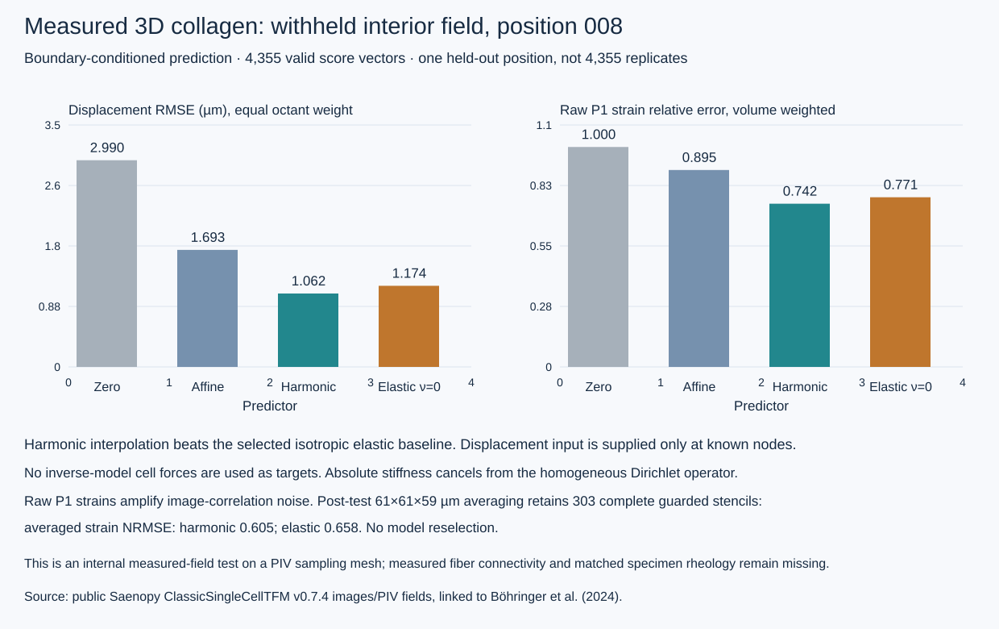

Measured 3D field, position 008
Three paired collagen reflection volumes around individual fibroblasts are publicly downloadable. Their image-derived PIV sampling meshes contain 24 × 24 × 25 nodes in a roughly 354 × 354 × 357 µm volume. Position 004 was used for implementation, 007 selected the elastic Poisson-ratio candidate, and 008 was reserved for final scoring.
This uses the measured displacement field on a regular sampling mesh. It does not recover actual fiber paths or crosslink connectivity. Known outer-face and near-cell nodal displacements condition the prediction; the cell is not cut out of this baseline domain. Missing boundary vectors remain unconstrained. Absolute stiffness cancels from the homogeneous displacement-boundary operator.
Drag either pane to orbit both; wheel or pinch to zoom. Keyboard: arrows to orbit, +/− to zoom, 1–4 for XY/XZ/YZ/isometric, Home to reset. Camera zoom changes the view; displacement magnification changes arrow display only. Points and vectors are saved fields, not reconstructed fibers.
Both panes use the same 0–8 µm magnitude color scale; residual arrows are differences, not uncertainty estimates.
Image-derived observed displacement
Selected elastic prediction
Only guarded held-out vectors are displayed, deterministically thinned for readability. Gray points show the reference fluorescence cell mask. Warm colors indicate displacement magnitude, not force or damage. Camera rotation adds no experimental time points. There are no measured time dynamics in this two-state comparison.
Final-position errors and coverage

4,355 valid test vectors occupy eight spatial octants; they are correlated observations within one held-out position. Primary displacement scoring weights octants equally. The source contains 240 missing vectors; 212 geometrically prescribed vectors are missing, leaving 3,385 supplied nodal constraints. Test points whose 35 µm interrogation supports overlap supplied supports were excluded before outcomes were scored.
Raw P1 strain is a volume-weighted infinitesimal-strain derivative descriptor. A post-test, non-selecting check averages displacement gradients on complete guarded 5³ neighborhoods spanning about 61 × 61 × 59 µm. It leaves 303 centers, with strain NRMSE 0.605 for harmonic and 0.658 for elasticity. The larger 9³ averaging stencil has no eligible centers and is reported as unavailable. These strains derive from the same PIV observations; they are not independent ground-truth strain measurements.
The secondary displacement NRMSE uses the observed held-out field’s RMS after boundary-only translation removal. This normalization differs from the optional boundary-derived scale in the prospective protocol; it affects neither predictions nor the primary absolute-error selection.